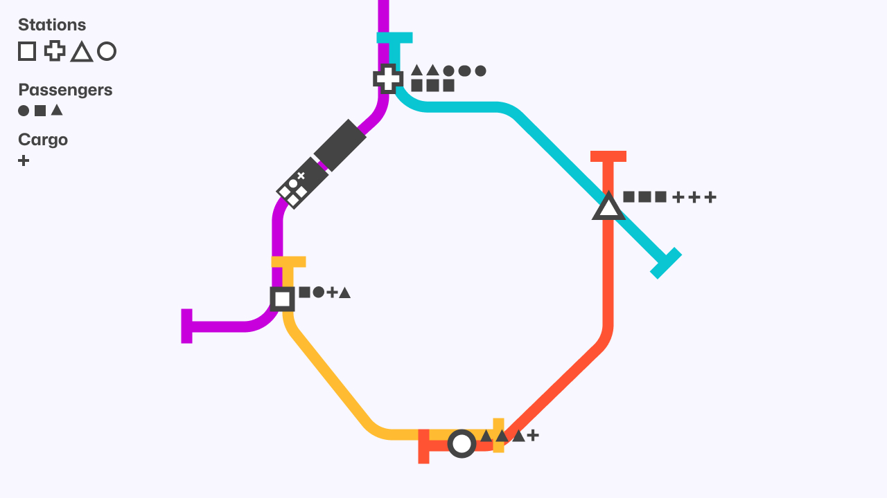
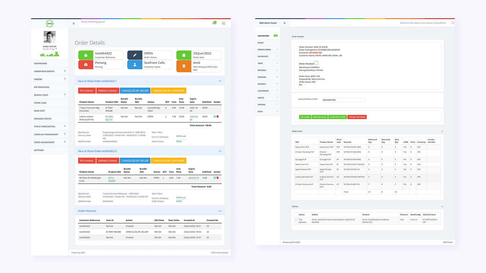
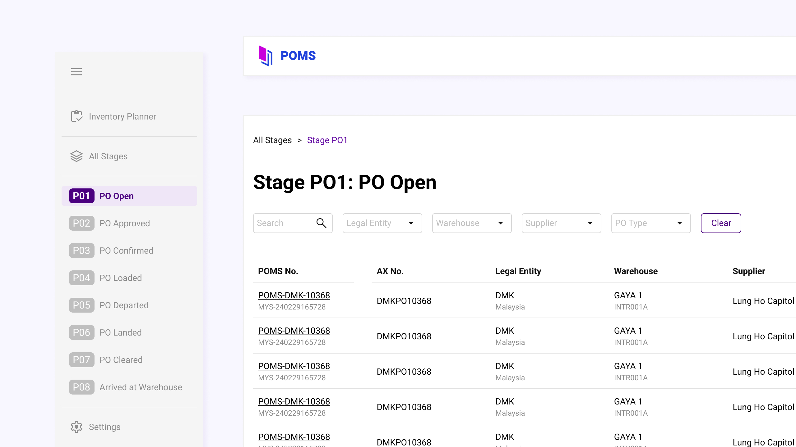
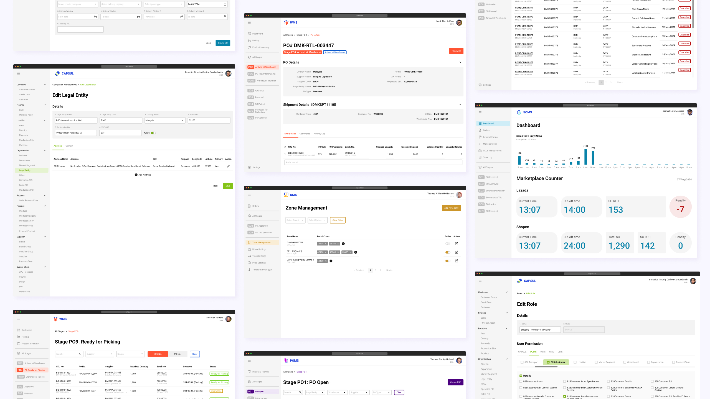

DPO Management System
The Gist
DPO International, a regional supply chain company, manages operations through a suite of internal platforms: POMS, DMS, WMS, SOMS, and CAPSUL. These tools supported departments like finance, procurement, sales, warehouse, and delivery. The CEO decided that these platforms needed a revamp with a more straightforward and simple flow and UI. This is where I step in because I, too, had an issue with the current UI (they're designed by developers 🤫).
Timeline: 1 Month (Yes, everything in one month!)
My Role: UI Designer
The System
Before jumping into design, I work closely with the Business Analyst to understand (translate) the flow, which is in a more than 15 pages long Excel file.
Basically the whole system is based on stages that starts from a customer order and ends in the final delivery.
Imagine a customer order as a train. As it moves along the track it will stop at multiple stations (AKA management systems; POMS, SOMS, WMS, DMS) and picks up:
- Passengers: Information (customer name, address, SKUs, quantity, etc)
- Cargo: Documents (customer invoices, delivery orders, etc)
Each platforms have several sections (some have 5 stages, some just 3 depending on the complexity).
Once the train reaches the final station (delivery complete), it returns to the first station and the process begins again. This is a continuous loop that reflects the day-to-day operational rhythm of the company.
The Problem
- The legacy UI was inconsistent, unintuitive, and visually outdated.
- Each platform had a different layout and interaction patterns.
- No shared components or design system across platforms.
Design Decisions
Since the users have been using the current system for a few years, I don't want to tear everything down and create something new. I came up with a structure that is familiar but improved.
To simplify development and user training, I introduced a shared layout system across all platforms. Each system now uses a consistent structure made up of three page types; Listing / Details / Form.
This consistency made it easier to:
- Scale features across platforms
- Train users faster
- Reduce confusion when switching between systems
Of course, each system needs to be same-same but different. While the layout stayed consistent, I gave each platform its own colour scheme based on each system's logos — helping users instantly recognise where they are without disrupting the shared structure.
Final Result
Each system now uses a familiar three-page structure (Listing, Details, Form), styled with its own colour theme. Every button sits quietly in its rightful place — no one's screaming for attention except when needed. The layout finally makes sense. It feels intuitive without trying too hard. So, is it all good now right? Right??
>> Take a closer look at the real MVP of the system revamp — the UI Kit
One More Thing
You might be wondering:
“Where’s the user research?”
“Did you benchmark against other apps?”
“Is the designer handsome?”
Yes, it would be lovely if I had the time to do all that and look good while doing it 😌
But in this case, the problem was obvious — and so was the solution.
- Time constraint. I had to redesign five platforms in one month. That’s not a research phase — that’s a triage mission.
- The layout was a mess. I wasn’t trying to reinvent it, just put everything back where it made sense. Think of it as doing some mise en place. Or if you don’t cook — a little Marie Kondo-ing of the UI.
- The pattern was already familiar. The users were used to the flow — I just cleaned it up and made it consistent.
Let me give you a prime example: email.
You start with an inbox which is listing page. Click an email — that’s the details page. Click reply — you’re in a form. Hit send — done. Same pattern. Different context.
I applied that same flow logic to the platforms:
- Listing → Details → Form
- Familiar. Predictable. No learning curve.
- Just better aligned, better styled, and way easier to use.